Description
Le site de asc libéral est un site web construit à l'aide du CMS Wordpress, il a été choisi pour sa popularité et aisance d'utilisation.
D'autres images : 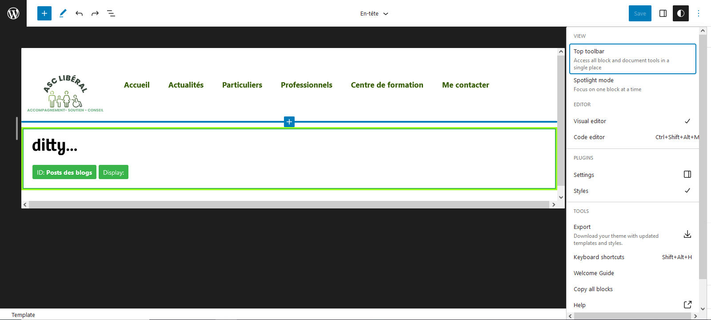 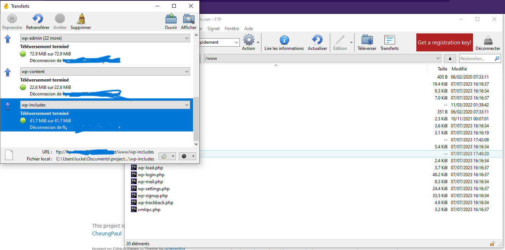 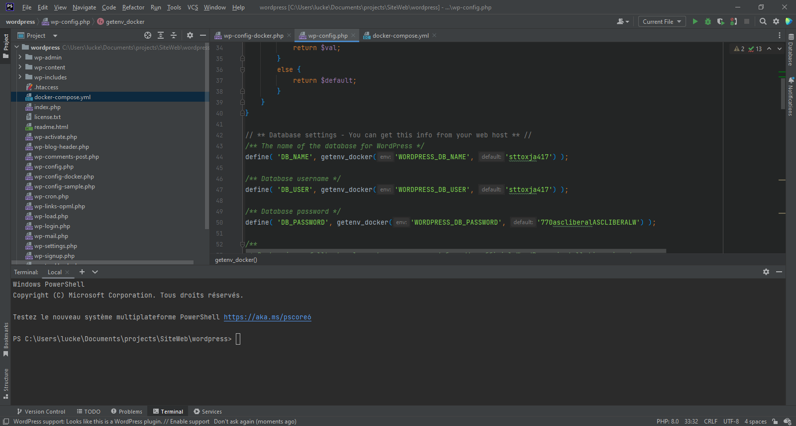 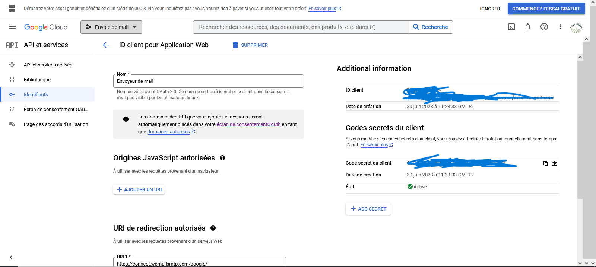 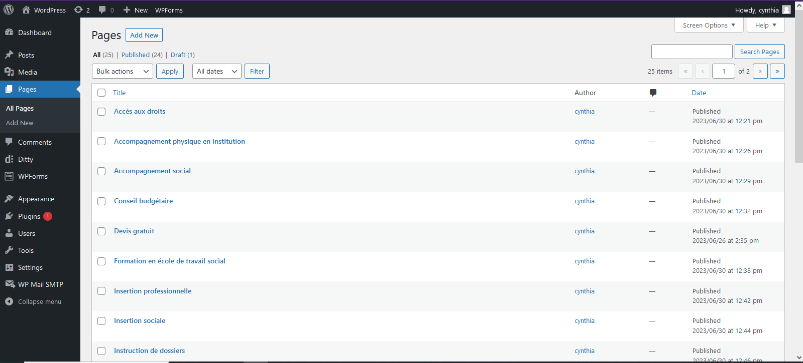 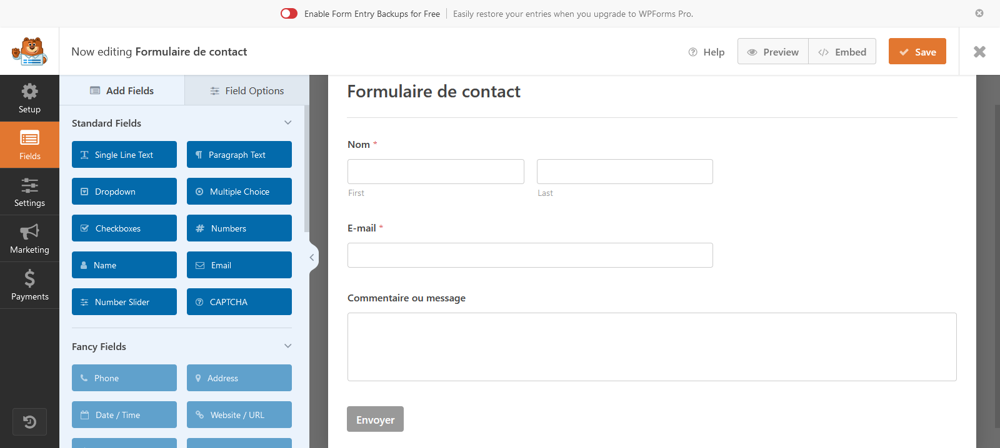 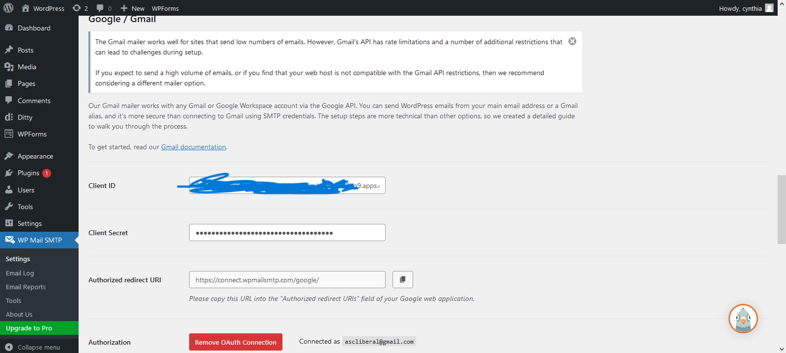
Langages et outils utilisés
WordPress
Le site de asc libéral est un site web construit à l'aide du CMS Wordpress, il a été choisi pour sa popularité et aisance d'utilisation.
D'autres images : 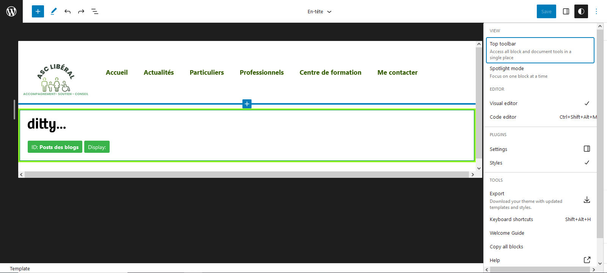 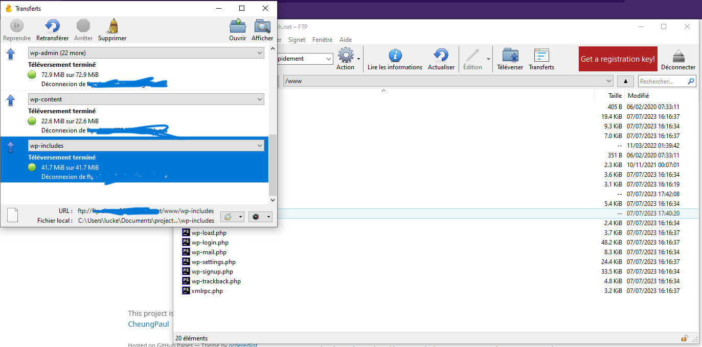 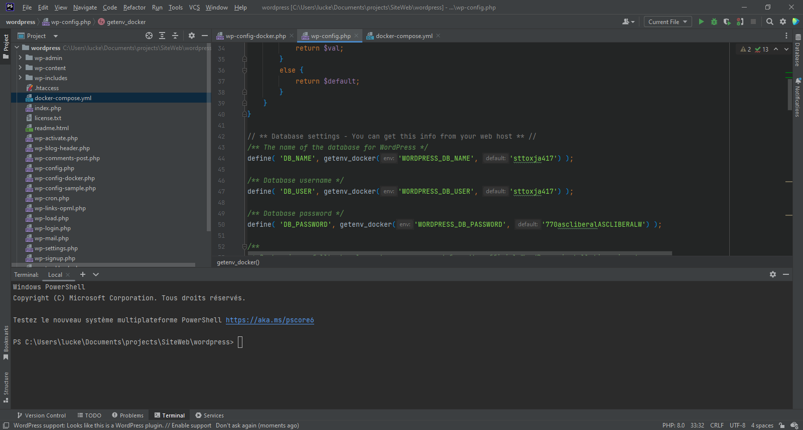 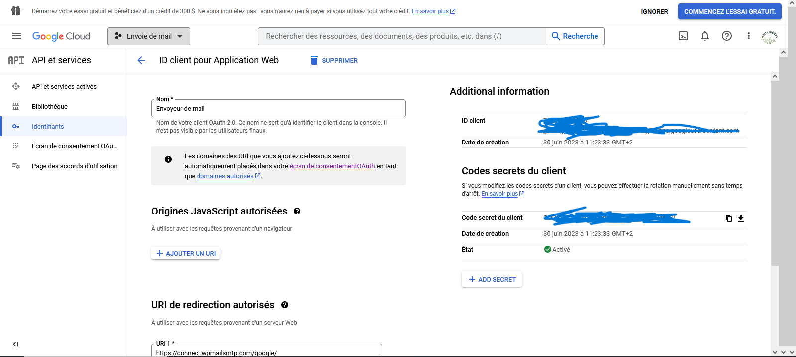 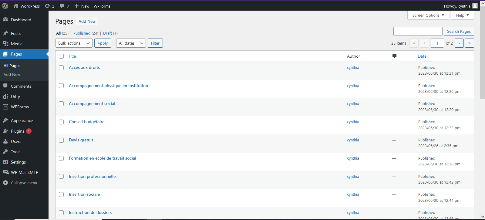 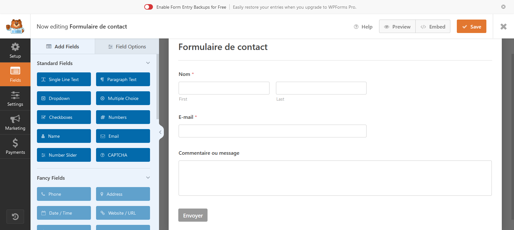 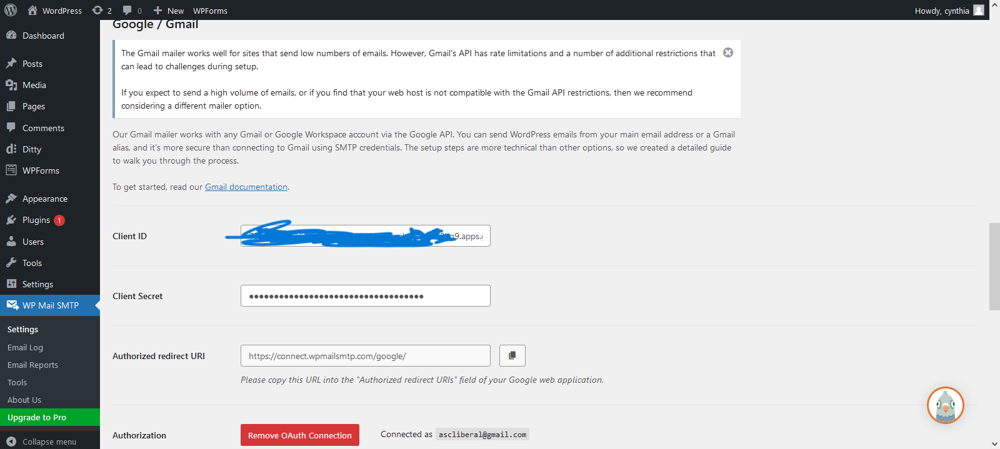